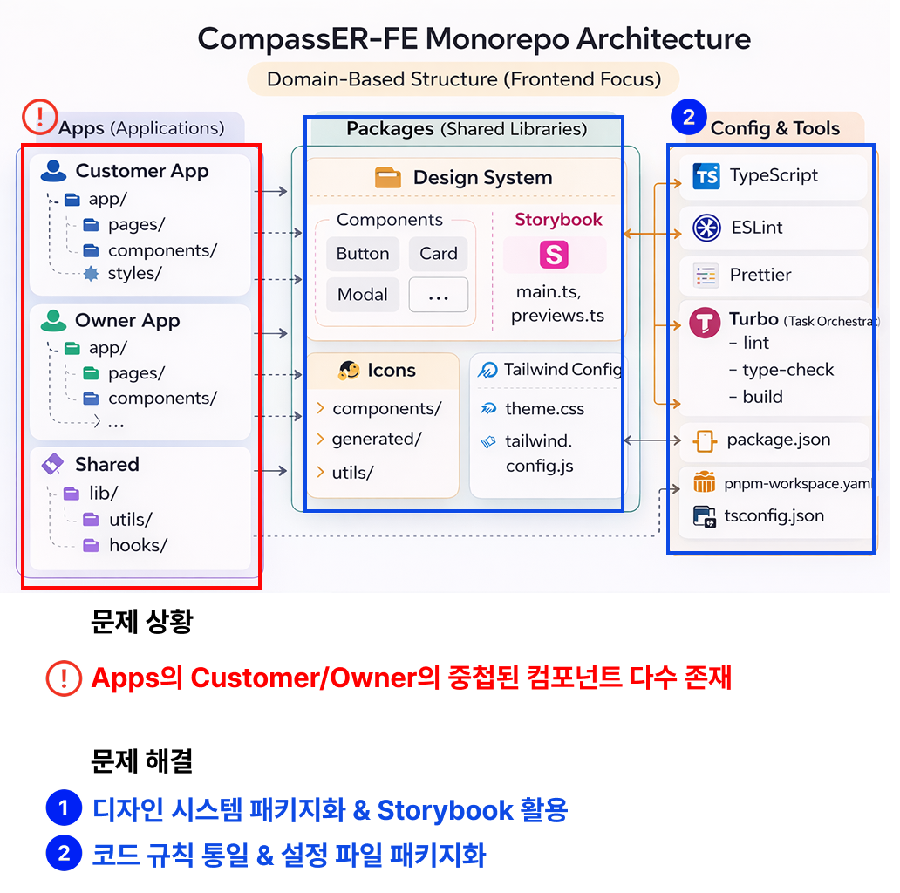

Design System, Storybook, 설정 패키지화를 중심으로 정리한 모노레포 구조
프로젝트를 진행하며 느낀 문제
여러 화면과 기능을 함께 개발하다 보면, 앱마다 비슷한 컴포넌트와 설정이 반복해서 생기는 문제가 자주 발생합니다. 처음에는 각 앱 안에서 필요한 컴포넌트와 설정을 따로 관리해도 큰 불편이 없어 보였지만, 기능이 늘어나고 화면 수가 많아질수록 구조적인 한계가 분명해졌습니다.
특히 고객용 화면과 운영용 화면처럼 성격이 다른 앱을 함께 다루는 환경에서는, 겉보기에는 비슷한 버튼, 카드, 모달, 아이콘이라도 각각 다른 위치에서 따로 관리되기 시작하면서 중복과 불일치가 빠르게 늘어났습니다.
- 앱마다 비슷한 UI 컴포넌트를 각각 따로 작성
- Tailwind, TypeScript, ESLint, Prettier 설정이 분산 관리됨
- 아이콘 파일 관리 방식이 일관되지 않아 유지보수가 번거로움
- 공통 컴포넌트를 검증하거나 미리보기할 수 있는 환경이 부족함
이런 구조에서는 기능 하나를 수정할 때도 여러 앱을 함께 확인해야 하고, 작은 변경이 전체 일관성에 영향을 주기 쉬웠습니다. 그래서 단순히 폴더를 정리하는 수준이 아니라, 공통 요소를 패키지 단위로 분리하고 각 앱은 그것을 조합해 사용하는 방식으로 구조를 다시 설계했습니다.
구조를 어떻게 바꿨는가
핵심은 다음 두 가지였습니다.
- 반복되는 UI와 자산을 Design System 중심으로 패키지화하기
- 설정 파일과 코드 규칙도 공통 패키지로 분리해 앱 전체 기준을 통일하기
구조를 정리한 뒤의 흐름은 아래와 같습니다.
Apps ├─ Customer App ├─ Owner App └─ Shared Packages ├─ Design System ├─ Icons ├─ Tailwind Config └─ TypeScript / ESLint / Prettier Config Tools └─ Turbo
각 앱은 직접 모든 것을 새로 만들지 않고, 공통 패키지에서 필요한 요소를 가져와 사용하는 방식으로 전환했습니다. 이렇게 하면 화면 단위 개발은 더 단순해지고, 공통 기준은 한 곳에서 관리할 수 있게 됩니다.
1. Design System 패키지화
가장 먼저 정리한 것은 반복적으로 사용되는 UI 컴포넌트였습니다. 버튼, 카드, 모달처럼 여러 화면에서 공통으로 사용하는 요소들을 각 앱 내부에 흩어두지 않고 하나의 Design System 패키지로 분리했습니다.
이 방식의 장점은 단순히 재사용에만 있지 않았습니다. 컴포넌트의 역할과 책임이 명확해지고, 새로운 화면을 만들 때도 이미 검증된 공통 UI를 조합하는 흐름으로 개발할 수 있게 되었습니다.
- Button, Card, Modal 등 공통 UI를 패키지로 분리
- 앱별 중복 구현 감소
- 디자인 일관성 유지가 쉬워짐
- 수정 시 여러 화면에 같은 기준을 빠르게 반영 가능
2. Storybook으로 컴포넌트 검증 환경 구성
공통 컴포넌트를 패키지로 분리한 뒤에는, 이 컴포넌트들을 화면 밖에서 독립적으로 확인할 수 있는 환경이 필요했습니다. 그래서 Storybook을 함께 구성해 각 컴포넌트를 상태별로 확인하고, UI를 빠르게 검증할 수 있도록 했습니다.
Storybook을 사용하면 실제 앱 전체를 실행하지 않아도 버튼의 크기, 카드의 상태, 모달의 열림 여부 같은 UI 변화를 바로 확인할 수 있습니다. 덕분에 공통 컴포넌트를 수정할 때도 영향 범위를 더 쉽게 파악할 수 있었고, 개발과 리뷰 과정도 훨씬 명확해졌습니다.
- 컴포넌트를 독립적으로 확인할 수 있는 미리보기 환경 구성
- 상태별 UI 테스트와 시각적 검토가 쉬워짐
- 공통 컴포넌트 수정 시 영향 범위를 빠르게 확인 가능
- 협업 시 디자인 의도와 구현 결과를 맞추기 쉬워짐
3. 아이콘 관리 자동화
아이콘도 처음에는 개별 파일을 직접 import해서 사용하는 방식이었지만, 파일이 많아질수록 이름 규칙, import 방식, 관리 위치가 제각각 달라지는 문제가 생겼습니다. 그래서 아이콘 역시 공통 자산으로 보고, 생성과 export를 자동화하는 구조로 정리했습니다.
이 과정을 통해 아이콘 사용 방식이 더 단순해졌고, 새로운 아이콘을 추가하거나 수정할 때도 반복 작업을 줄일 수 있었습니다. UI 개발 속도뿐 아니라 자산 관리 방식 자체가 더 안정적으로 바뀌었습니다.
- 아이콘 파일의 생성 및 export 흐름 정리
- 반복적인 수작업 import 감소
- 이름 규칙과 사용 방식 통일
- 공통 자산 관리 효율 향상
4. TypeScript · ESLint · Prettier · Tailwind 설정 패키지화
UI만 공통화한다고 해서 구조가 완전히 정리되지는 않았습니다. 실제로 여러 앱을 함께 운영할 때 더 자주 부딪히는 문제는 설정 파일이 앱마다 조금씩 다르게 관리된다는 점이었습니다.
예를 들어 TypeScript 옵션, ESLint 규칙, Prettier 포맷팅 기준, Tailwind 설정 파일이 앱마다 다르면 같은 코드를 작성해도 결과가 달라지고 협업 비용이 커집니다. 그래서 이 설정들도 각각 공통 패키지로 분리해, 필요한 앱이 동일한 기준을 공유하도록 정리했습니다.
packages/ ├─ typescript-config ├─ eslint-config ├─ tailwind-config └─ design-system
- 코드 스타일과 검사 기준을 앱 전체에서 통일
- 새 앱 추가 시 설정 복사를 최소화
- 설정 변경 시 공통 기준을 한 번에 반영 가능
- 개발 환경 차이로 생기는 불필요한 혼선 감소
5. Turbo 기반으로 작업 흐름 정리
패키지가 늘어나면 그만큼 빌드, 린트, 타입체크 같은 작업 흐름도 중요해집니다. 그래서 모노레포 운영에서는 Turbo를 활용해 앱과 패키지의 작업 단위를 연결하고, 반복되는 개발 작업을 더 효율적으로 수행할 수 있도록 구성했습니다.
이 구조 덕분에 각 패키지가 독립적으로 역할을 가지면서도 전체 저장소 기준에서는 하나의 일관된 흐름으로 관리할 수 있게 되었습니다. 특히 공통 패키지를 수정했을 때 어떤 앱에 영향이 가는지 흐름을 파악하기 쉬워졌고, 개발 과정도 더 예측 가능해졌습니다.
- build, lint, type-check 흐름을 저장소 단위로 정리
- 앱과 패키지 간 의존 관계를 기준으로 작업 관리
- 반복 작업 자동화와 개발 생산성 향상
- 모노레포 구조에서 일관된 운영 기준 확보
결과적으로 달라진 점
이 구조 변경의 핵심은 “코드를 한 곳에 모았다”는 데 있지 않습니다. 오히려 앱은 화면과 기능에 집중하고, 공통 기준은 패키지에서 관리하는 역할 분리가 가능해졌다는 점이 가장 컸습니다.
그 결과 다음과 같은 변화를 얻을 수 있었습니다.
- 중복 컴포넌트 감소
- UI와 코드 규칙의 일관성 향상
- 공통 컴포넌트 수정과 검증이 쉬워짐
- 새로운 앱이나 화면을 확장할 때 구조적 부담 감소
- 협업 시 공통 기준을 설명하고 공유하기 쉬워짐
정리
이번 작업은 단순히 폴더를 나누는 리팩토링이 아니라, 여러 앱이 함께 자라날 수 있도록 구조의 기준을 다시 세우는 과정이었습니다.
- Design System 패키지화
- Storybook 기반 컴포넌트 검증 환경 구성
- 아이콘 관리 자동화
- TypeScript, ESLint, Prettier, Tailwind 설정 패키지화
- Turbo 기반 작업 흐름 통합
기능을 빠르게 만드는 것도 중요하지만, 프로젝트가 커질수록 더 중요한 것은 “어떻게 계속 관리 가능한 구조를 유지할 것인가”라고 생각합니다. 이번 작업은 그 기준을 코드와 구조로 정리해본 경험이었습니다.
참고
구현에 사용한 구조와 실제 코드 구성은 아래 저장소를 기반으로 정리했습니다.